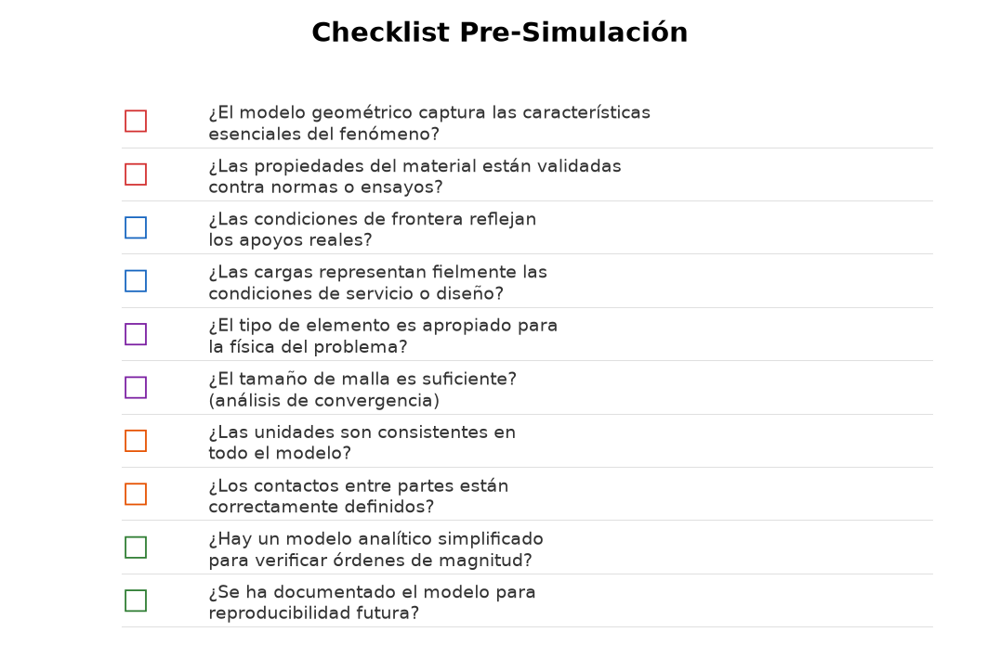
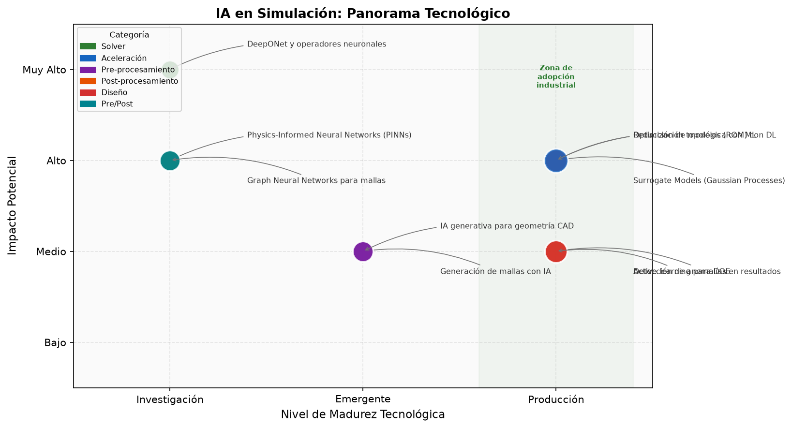

Flujo de trabajo profesional
e IA en simulación
y el panorama de la inteligencia artificial aplicada a la simulación.
Agenda de la sesión
Flujo profesional
Checklist de las 5 preguntas, documentación mínima, el informe de resultados en 7 secciones y la reproducibilidad.
IA en simulación
Cuellos de botella de la simulación tradicional y las tecnologías emergentes: surrogados, PINNs, ROM.
Ciclo completo
Soporte en L bajo carga combinada: de las 5 preguntas al informe, verificando contra la superposición lineal.
Proyecto integrador
Taller 6: geometría propia, convergencia con GCI, sensibilidad y el informe final del curso.
Checklist pre-simulación: las 5 preguntas
Antes de abrir el software, responda estas preguntas. Si no puede responder alguna, no está listo para simular.
- ¿Qué quiero saber? — Desplazamiento máximo, factor de seguridad, frecuencia natural, temperatura de operación…
- ¿Qué física gobierna el fenómeno? — Elástico lineal, plástico, térmico, acoplado…
- ¿Qué precisión necesito? — ±1% o ±10%: esto determina el refinamiento de malla y el nivel de validación.
- ¿Contra qué voy a comparar? — Experimento, solución analítica, norma, simulación previa.
- ¿Cuál es mi hipótesis? — ¿Qué espero que pase? Si el resultado difiere mucho, ¿confío en mi intuición o en la simulación?
Durante la simulación: documente todo
Un modelo no documentado es un modelo desechable. En 6 meses, ni usted recordará por qué eligió esa malla o esa condición de frontera.
Lo mínimo que debe documentar
- · Versión del software y del solver usados
- · Sistema de unidades
- · Propiedades de material y su fuente (norma, ensayo, estimación)
- · Condiciones de frontera y su justificación física
Y también…
- · Estadísticas de malla: número de elementos, tipo, calidad (aspect ratio, skewness)
- · Criterio de convergencia usado
- · Resultados clave y comparación con la referencia
- · Fecha, autor y archivo del modelo
El informe de resultados: 7 secciones

- Resumen ejecutivo — qué se simuló, resultado principal, conclusión.
- Descripción del modelo — geometría, materiales, malla, CF y cargas (con figuras).
- Verificación — convergencia de malla y comparación con solución analítica.
- Validación — datos experimentales o límites físicos conocidos.
- Resultados — desplazamientos, esfuerzos, modos: lo relevante al objetivo.
- Discusión — ¿tiene sentido físico? ¿Singularidades? ¿Limitaciones?
- Conclusiones y recomendaciones — ¿cumple el diseño? ¿Qué se recomienda?
Reproducibilidad: la simulación como ciencia
La simulación ingenieril debe ser reproducible. Eso significa tres prácticas concretas:
Scripts en lugar de clicks
Use APDL (ANSYS), Python scripting (Abaqus) o macros en lugar de interacción manual. En FreeCAD: Macros y el archivo .inp de CalculiX.
Control de versiones
Guarde los archivos de entrada en Git, no solo los PDF de resultados. El modelo es el código fuente de su análisis.
Parámetros explícitos
No use valores por defecto sin entenderlos. Cada parámetro del modelo debe tener un valor intencional y documentado.
Por qué IA: los 3 cuellos de botella
La simulación tradicional enfrenta tres limitaciones que la IA busca resolver:
Costo computacional
Un análisis no lineal 3D puede tomar horas o días de cómputo por cada caso.
Exploración del espacio de diseño
Optimizar requiere cientos o miles de simulaciones para barrer parámetros.
Conocimiento experto
Configurar correctamente una simulación requiere años de experiencia.
Panorama: IA en simulación

Tecnologías clave
| Tecnología | Idea central | Estado |
|---|---|---|
| Modelos surrogados | ML (GP, red neuronal) aprende entrada → salida del simulador; predice en < 1 ms | Adopción industrial alta |
| PINNs | La física entra en la función de pérdida; sin malla; problemas inversos | Investigación activa |
| ROM + deep learning | POD + red neuronal: de millones de DOF a unos cientos; gemelos digitales | Alta en aeroespacial |
| Optimización topológica con ML | GANs/VAEs proponen geometrías; FEM las valida (nTopology, OptiStruct, Tosca) | Comercial madura |
| Generación de mallas con IA | Predice la distribución óptima de tamaño de elemento | Emergente |
¿Qué significa para el ingeniero?
La IA no reemplaza el criterio
Un surrogate entrenado con datos de mala calidad produce predicciones malas a alta velocidad.
V&V aplica también a la IA
¿Con qué datos se entrenó? ¿Cuál es el dominio de validez? ¿Se respetan las leyes físicas?
Formule buenas preguntas
La IA acelera la exploración, pero saber qué explorar sigue siendo una decisión humana.
Aprenda los fundamentos
Un ingeniero que entiende FEM + fundamentos de ML vale más que uno que solo sabe usar software.
Recursos para empezar
| Recurso | Tipo | Enfoque |
|---|---|---|
| Raissi et al. (2019) | Paper fundacional | Physics-Informed Neural Networks (PINNs) |
| Lu et al. (2021) | Paper | DeepONet: operadores neuronales para EDP |
| scikit-learn GP | Biblioteca Python | Gaussian Processes para modelos surrogados |
| MODULO (Stanford) | Software | Reduced Order Models |
| Simulia ROM (Dassault) | Comercial | ROM integrado en 3DEXPERIENCE |
Ciclo completo: soporte bajo carga combinada
Enunciado
- · Ménsula (soporte) en L de acero: 120 × 80 × 10 mm
- · Empotrada por la cara vertical del brazo corto
- · Carga de flexión: 2000 N en el extremo del brazo largo (dirección -Z)
- · Carga axial: 500 N en la dirección del brazo
- · Acero: E = 210 GPa, ν = 0.3
Pregunta de diseño
¿Cuánto se deflecta el extremo y cuál es el esfuerzo máximo combinado?
Aplicamos el ciclo completo del cap. 8: checklist → modelo → malla → solver → convergencia → informe.
La referencia analítica: superposición lineal
Inercia de la sección
Sección del brazo largo: 10 × 80 mm
Esfuerzo axial
Área: 10 × 80 = 800 mm²
Esfuerzo por flexión
M = 2000·120 N·mm ; c = 40 mm
Esfuerzo combinado
Superposición lineal (elástico lineal)
El ciclo completo en FreeCAD FEM
- Checklist — responder las 5 preguntas por escrito (bitácora)
- Geometría — Part → Box 120×80×10 + Part → Cut para el perfil en L
- Análisis — FEM → Analysis container → New analysis; material acero (E=210000 MPa, ν=0.3)
- Condiciones — Constraint fixed en la cara del brazo corto; Constraint force: 2000 N y 500 N
- Malla — Gmsh, tamaño de elemento 5 mm → ejecutar
- Refinar — malla de 2.5 mm → ejecutar de nuevo (convergencia)
- Resultados — δ máx y σ von Mises; comparar con σ ≈ 25 MPa
- Informe — documentar con el formato del cap. 8.3 (7 secciones)
Valores esperados (verificados)
| Magnitud | Valor esperado | Fuente |
|---|---|---|
| Inercia I | 426667 mm⁴ | bh³/12 con b=10, h=80 |
| σ axial | 2.5 MPa | F/A = 500/800 |
| σ flexión | ≈ 22.5 MPa | M·c/I con M = 2000·120 |
| σ combinada | ≈ 25 MPa | Superposición lineal |
| δ extremo | 0.2–0.5 mm | Orden de magnitud (modelo FEM) |
Taller 6 — Proyecto integrador (cierre del curso)
El encargo
Cada estudiante elige una geometría (soporte, ménsula, chasis simple, viga con agujeros) sometida a carga combinada, y la lleva por el ciclo completo del cap. 8.
Entregables (guía, cap. 9.4)
- Modelo CAD simplificado con justificación
- Informe de convergencia de malla (3 mallas con GCI)
- Análisis de sensibilidad a ±10% en E
- Informe de resultados (formato cap. 8.3, 7 secciones)
- Reflexión: 3 mayores fuentes de incertidumbre
Rúbrica (100 pts)
- · Modelo y simplificación — 25
- · Convergencia + GCI — 25
- · Sensibilidad — 15
- · Informe completo — 25
- · Reflexión de incertidumbres — 10
Seis sesiones, un solo flujo
Simular
Fenómeno → modelo (caps. 1–2).
Discretizar
Métodos numéricos, [K]{u}={F} (cap. 3).
Pre-procesar
Geometría, material, malla (cap. 4.2).
Resolver y leer
Solver, singularidades, escepticismo (caps. 4.3–4.4).
Verificar y validar
Convergencia, GCI, sensibilidad (caps. 5–6).
Documentar
Checklist, informe, reproducibilidad, IA (caps. 7–8).
Recursos de la sesión
Guía de referencia
- Cap. 7 — IA en simulación (7.1 cuellos, 7.2 tecnologías, 7.3 para el ingeniero)
- Cap. 8.1 — Checklist pre-simulación
- Cap. 8.2 — Documentación durante la simulación
- Cap. 8.3 — Informe de resultados (7 secciones)
- Cap. 8.4 — Reproducibilidad
- Cap. 9.4 — Ejercicio integrador
Archivos del curso
- ejercicio_paso_a_paso.html — ciclo completo guiado
- taller.html — proyecto integrador + rúbrica
- video/guion.md — guion del video asíncrono
- Notebooks guía: 02_convergencia_malla, 03_validacion
Referencias IA: [3] M. Raissi, P. Perdikaris, G. E. Karniadakis, "Physics-informed neural networks", J. Comput. Phys., 378 (2019) 686–707. [4] L. Lu et al., "Learning nonlinear operators via DeepONet", Nat. Mach. Intell., 3 (2021) 218–229.
Verifica, valida,
documenta
Compruébela contra una referencia y déjela por escrito.